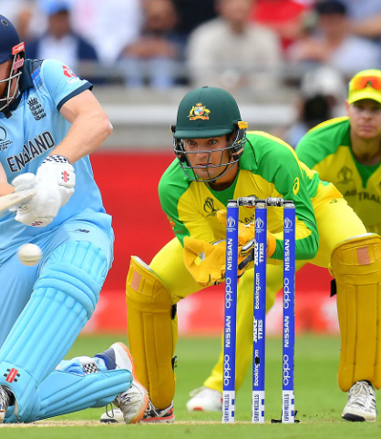
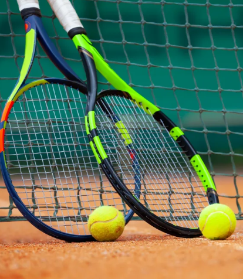
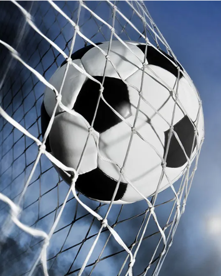

top 5 most popular sports
N5

volleyball
Volleyball is a team sport in which two teams of six players are separated by a net. Each team tries to score points by grounding a ball on the other team's court under organized rules.[1] It has been a part of the official program of the Summer Olympic Games since Tokyo 1964. Beach volleyball was introduced to the programme at the Atlanta 1996 Summer Olympics. The adapted version of volleyball at the Summer Paralympic Games is sitting volleyball.
The complete set of rules is extensive,[2] but play essentially proceeds as follows: a player on one of the teams begins a 'rally' by serving the ball (tossing or releasing it and then hitting it with a hand or arm), from behind the back boundary line of the court, over the net, and into the receiving team's court.[3] The receiving team must not let the ball be grounded within their court. The team may touch the ball up to three times to return the ball to the other side of the court, but individual players may not touch the ball twice consecutively.[3] Typically, the first two touches are used to set up for an attack. An attack is an attempt to direct the ball back over the net in such a way that the team receiving the ball is unable to pass the ball and continue the rally, thus, losing the point. The team that wins the rally is awarded a point and serves the ball to start the next rally.
N4

cricket
Cricket is a bat-and-ball game that is played between two teams of eleven players on a field, at the centre of which is a 22-yard (20-metre) pitch with a wicket at each end, each comprising two bails balanced on three stumps. Two players from the batting team (the striker and nonstriker) stand in front of either wicket holding bats, with one player from the fielding team (the bowler) bowling the ball towards the striker's wicket from the opposite end of the pitch. The striker's goal is to hit the bowled ball with the bat and then switch places with the nonstriker, with the batting team scoring one run for each exchange. Runs are also scored when the ball reaches or crosses the boundary of the field or when the ball is bowled illegally.
The fielding team tries to prevent runs from being scored by dismissing batters (so they are "out"). Means of dismissal include being bowled, when the ball hits the striker's wicket and dislodges the bails, and by the fielding side either catching the ball after it is hit by the bat but before it hits the ground or hitting a wicket with the ball before a batter can cross the crease in front of the wicket. When ten batters have been dismissed, the innings ends and the teams swap roles. Forms of cricket range from Twenty20 (also known as T20), with each team batting for a single innings of 20 overs (each "over" being a set of 6 fair opportunities for the batting team to score) and the game generally lasting three to four hours, to Test matches played over five days.
N3

basketball
Basketball is a team sport in which two teams, most commonly of five players each, opposing one another on a rectangular court, compete with the primary objective of shooting a basketball (approximately 9.4 inches (24 cm) in diameter) through the defender's hoop (a basket 18 inches (46 cm) in diameter mounted 10 feet (3.048 m) high to a backboard at each end of the court), while preventing the opposing team from shooting through their own hoop. A field goal is worth two points, unless made from behind the three-point line, when it is worth three. After a foul, timed play stops and the player fouled or designated to shoot a technical foul is given one, two or three one-point free throws. The team with the most points at the end of the game wins, but if regulation play expires with the score tied, an additional period of play (overtime) is mandated.
Players advance the ball by bouncing it while walking or running (dribbling) or by passing it to a teammate, both of which require considerable skill. On offense, players may use a variety of shots – the layup, the jump shot, or a dunk; on defense, they may steal the ball from a dribbler, intercept passes, or block shots; either offense or defense may collect a rebound, that is, a missed shot that bounces from rim or backboard. It is a violation to lift or drag one's pivot foot without dribbling the ball, to carry it, or to hold the ball with both hands then resume dribbling.
The five players on each side fall into five playing positions. The tallest player is usually the center, the second-tallest and strongest is the power forward, a slightly shorter but more agile player is the small forward, and the shortest players or the best ball handlers are the shooting guard and the point guard, who implement the coach's game plan by managing the execution of offensive and defensive plays (player positioning). Informally, players may play three-on-three, two-on-two, and one-on-one.
N2

tennis
Tennis is a racket sport that is played either individually against a single opponent (singles) or between two teams of two players each (doubles). Each player uses a tennis racket strung with a cord to strike a hollow rubber ball covered with felt over or around a net and into the opponent's court. The object of the game is to manoeuvre the ball in such a way that the opponent is not able to play a valid return. The player unable to return the ball validly will not gain a point, while the opposite player will.[1][2]
Playable at all levels of society and at all ages, tennis can be played by anyone who can hold a racket, including wheelchair users. The original forms of tennis developed in France during the late Middle Ages.[3] The modern form of tennis originated in Birmingham, England, in the late 19th century as lawn tennis.[4] It had close connections to various field (lawn) games such as croquet and bowls as well as to the older racket sport today called real tennis.
N1

soccer
Association football, more commonly known as football or soccer,[a] is a team sport played between two teams of 11 players each, who primarily use their feet to propel a ball around a rectangular field called a pitch. The objective of the game is to score more goals than the opposing team by moving the ball beyond the goal line into a rectangular-framed goal defended by the opposing team. Traditionally, the game has been played over two 45-minute halves, for a total match time of 90 minutes. With an estimated 250 million players active in over 200 countries and territories, it is the world's most popular sport.
The game of association football is played in accordance with the Laws of the Game, a set of rules that has been in effect since 1863 and maintained by the IFAB since 1886. The game is played with a football that is 68–70 cm (27–28 in) in circumference. The two teams compete to get the ball into the other team's goal (between the posts, under the bar, and fully across the goal line), thereby scoring a goal. When the ball is in play, the players mainly use their feet, but may use any other part of their body, except for their hands or arms, to control, strike, or pass the ball. Only the goalkeepers may use their hands and arms, and only then within the penalty area. The team that has scored more goals at the end of the game is the winner. There are situations where a goal can be disallowed, such as an offside call or a foul in the build-up to the goal. Depending on the format of the competition, an equal number of goals scored may result in a draw being declared, or the game goes into extra time or a penalty shoot-out.[5]